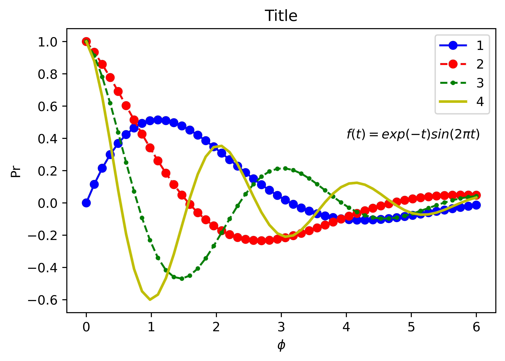
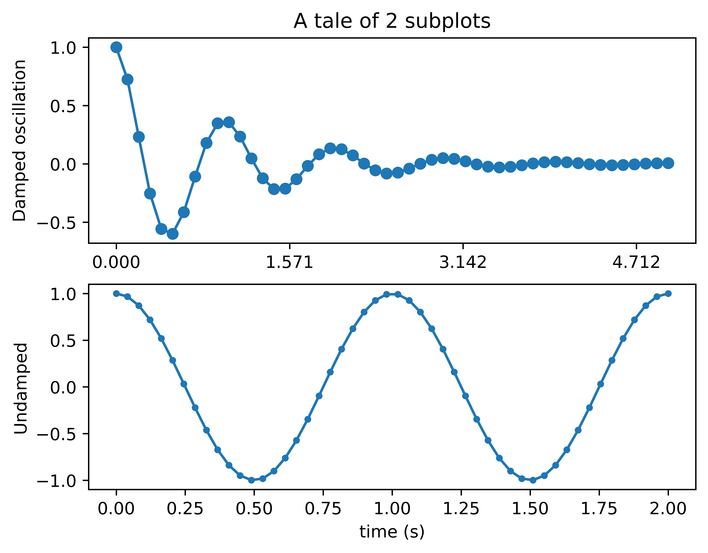
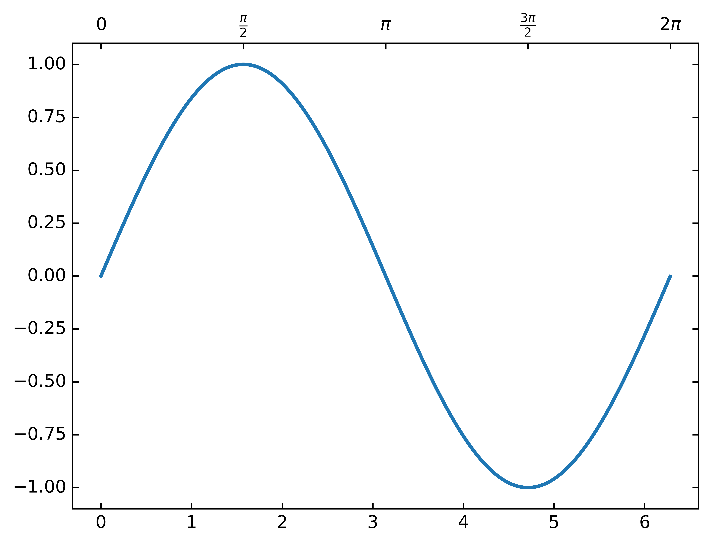
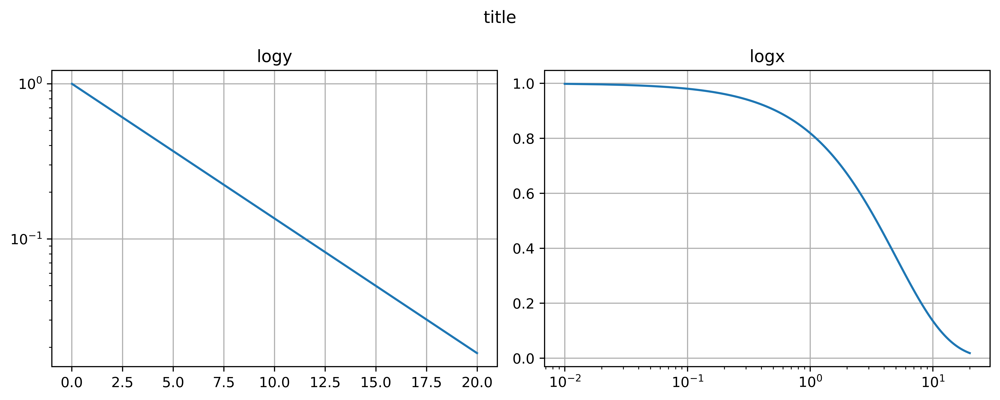
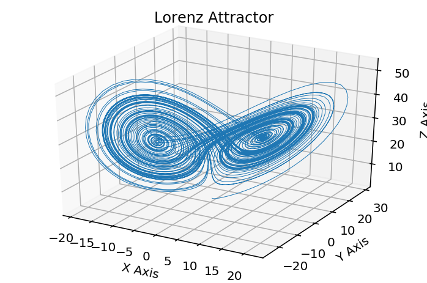
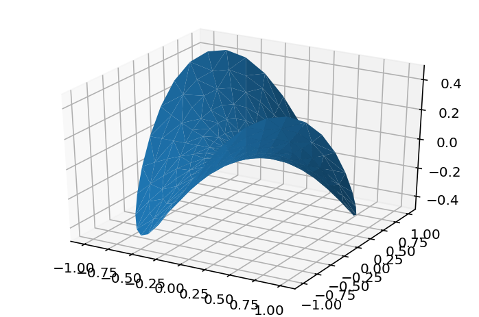
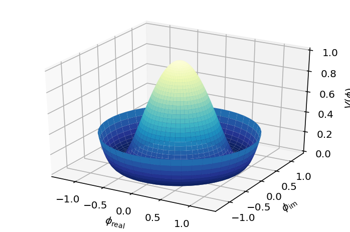
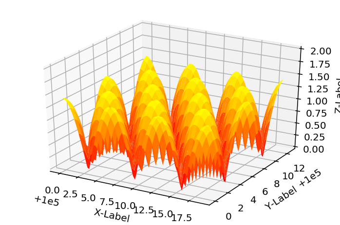

Matplotlib Samples#
2D Plot functions (multiple lines)#
import numpy as np
import matplotlib as mpl
mpl.rcParams['figure.dpi'] = 400
import matplotlib.pyplot as plt
%matplotlib inline
%config InlineBackend.figure_format = 'retina'
fig, ax = plt.subplots(figsize=(6, 4))
x = np.linspace(0,6,50)
y1= np.exp(-0.5*x) * np.sin(x)
y2= np.exp(-0.5*x) * np.cos(x)
y3= np.exp(-0.5*x) * np.cos(2*x)
y4= np.exp(-0.5*x) * np.cos(3*x)
ax.plot(x, y1, 'bo-')
ax.plot(x, y2, 'ro--')
ax.plot(x, y3, 'g.--', markersize=5)
ax.plot(x, y4, 'y-', linewidth=2)
# ax.set_xlim(0, 7)
# ax.set_ylim(-1, 1.5)
ax.set_xlabel(r'$ \phi $')
ax.set_ylabel('Pr')
ax.set_title('Title')
ax.text(4, 0.4, r'$f(t) = exp(-t) sin(2 \pi t)$')
ax.legend(('1', '2', '3', '4'), loc='upper right')
fig.savefig('transparent.png', transparent=True, dpi=400)

subplot#
"""
Simple demo with multiple subplots.
"""
import numpy as np
import matplotlib.pyplot as plt
x1 = np.linspace(0.0, 5.0)
x2 = np.linspace(0.0, 2.0)
y1 = np.cos(2 * np.pi * x1) * np.exp(-x1)
y2 = np.cos(2 * np.pi * x2)
plt.subplot(2, 1, 1)
plt.plot(x1, y1, 'o-')
plt.title('A tale of 2 subplots')
plt.ylabel('Damped oscillation')
plt.xticks([0., .5*np.pi, np.pi, 1.5*np.pi])
plt.subplot(2, 1, 2)
plt.plot(x2, y2, '.-')
plt.xlabel('time (s)')
plt.ylabel('Undamped')
plt.show()

import matplotlib.pyplot as plt
from mpl_toolkits.axes_grid1 import host_subplot
import mpl_toolkits.axisartist as AA
import numpy as np
ax = host_subplot(111, axes_class=AA.Axes)
xx = np.arange(0, 2*np.pi, 0.01)
x = np.linspace(0, 2*np.pi, 20)
y = np.sin(x)
yp = None
xi = np.linspace(x[0], x[-1], 100)
# yi = stineman_interp(xi, x, y, yp)
ax.plot(xx, np.sin(xx), linewidth=2)
# ax.plot(xi, yi, '.')
ax2 = ax.twin() # ax2 is responsible for "top" axis and "right" axis
ax2.set_xticks([0., .5*np.pi, np.pi, 1.5*np.pi, 2*np.pi])
ax2.set_xticklabels(["$0$", r"$\frac{\pi}{2}$", r"$\pi$", r"$\frac{3\pi}{2}$", r"$2\pi$"])
ax2.axis["right"].major_ticklabels.set_visible(False)
ax2.axis["top"].major_ticklabels.set_visible(True)
plt.show()

log plot#
import matplotlib.pyplot as plt
import numpy as np
dt = 0.01
t = np.arange(dt, 20.0, dt)
fig, (ax0, ax1) = plt.subplots(ncols=2, figsize=(10, 4))
ax0.semilogy(t, np.exp(-t/5.0))
ax0.grid(True)
ax0.set_title('logy')
ax1.semilogx(t, np.exp(-t/5.0))
ax1.grid(True)
ax1.set_title('logx')
fig.suptitle('title')
fig.tight_layout()
fig.savefig('subplot.pdf', transparent=True, dpi=300)
plt.show()

Animation#
import numpy as np
import matplotlib as mpl
mpl.rcParams['figure.dpi'] = 400
import matplotlib.pyplot as plt
%matplotlib inline
%config InlineBackend.figure_format = 'retina'
x = np.arange(6)
y = np.arange(5)
z = x * y[:, np.newaxis]
for i in range(5):
if i == 0:
p = plt.imshow(z)
fig = plt.gcf()
plt.clim() # clamp the color limits
plt.title("Boring slide show")
else:
z = z + 20
p.set_data(z)
fig.canvas.draw()
print("step", i)
plt.pause(0.1)
step 0
step 1
step 2
step 3
step 4
import numpy as np
import matplotlib as mpl
# mpl.rcParams['figure.dpi'] = 300
import matplotlib.pyplot as plt
%matplotlib notebook
fig, ax = plt.subplots(figsize=(6, 4))
# x = np.array([1,2,3,4,5,6,7,8,9,10])
# y =[5,6,2,3,13,4,1,2,4,8]
ax.set_xlabel('X Label')
ax.set_ylabel('Y Label')
ax.set_xlim(-1, 10)
ax.set_ylim(0, 11)
for i in range(10):
ax.scatter(i, i+1, c='r', marker='o')
fig.canvas.draw()
plt.pause(0.1)
# plt.show()
# plt.savefig('animation.pdf',transparent=True, dpi=300)
import matplotlib.pyplot as plt
import numpy as np
import time
fig = plt.figure()
fig.show()
for j in range(5):
plt.plot(range(0, j), [1/(i+1) for i in range(0, j)])
fig.canvas.draw()
time.sleep(0.1)
Histogram plot#
import numpy as np
import matplotlib.pyplot as plt
import matplotlib.patches as patches
import matplotlib.path as path
fig, ax = plt.subplots()
# histogram our data with numpy
data = np.random.randn(1000)
n, bins = np.histogram(data, 50)
# get the corners of the rectangles for the histogram
left = np.array(bins[:-1])
right = np.array(bins[1:])
bottom = np.zeros(len(left))
top = bottom + n
# we need a (numrects x numsides x 2) numpy array for the path helper
# function to build a compound path
XY = np.array([[left, left, right, right], [bottom, top, top, bottom]]).T
# get the Path object
barpath = path.Path.make_compound_path_from_polys(XY)
# make a patch out of it
patch = patches.PathPatch(barpath)
ax.add_patch(patch)
# update the view limits
ax.set_xlim(left[0], right[-1])
ax.set_ylim(bottom.min(), top.max())
plt.show()
import matplotlib.pyplot as plt
import numpy as np
np.random.seed(1)
x = np.random.normal(5, 2, 10000)
y = np.random.normal(2, 0.1, 30000)
xweights = 100 * np.ones_like(x) / x.size
yweights = 100 * np.ones_like(y) / y.size
fig, ax = plt.subplots()
ax.hist(x, weights=xweights, color='lightblue', alpha=0.5)
ax.hist(y, weights=yweights, color='salmon', alpha=0.5)
ax.set(title='Histogram Comparison', ylabel='% of Dataset in Bin')
ax.margins(0.05)
ax.set_ylim(bottom=0)
plt.show()
import numpy as np
import matplotlib.pyplot as plt
np.random.seed(0)
mu = 200
sigma = 25
x = np.random.normal(mu, sigma, size=100)
fig, (ax0, ax1) = plt.subplots(ncols=2, figsize=(8, 4))
ax0.hist(x, 20, histtype='stepfilled', facecolor='g', alpha=0.75)
# ax0.hist(x, 20, normed=1, histtype='stepfilled', facecolor='g', alpha=0.75)
ax0.set_title('stepfilled')
# Create a histogram by providing the bin edges (unequally spaced).
bins = [100, 150, 180, 195, 205, 220, 250, 300]
ax1.hist(x, bins, histtype='bar', rwidth=0.8)
# ax1.hist(x, bins, normed=1, histtype='bar', rwidth=0.8)
ax1.set_title('unequal bins')
fig.tight_layout()
plt.show()
3D plot#
import matplotlib.pyplot as plt
from mpl_toolkits.mplot3d import Axes3D
%matplotlib inline
fig = plt.figure()
ax = fig.gca(projection='3d')
x =[1,2,3,4,5,6,7,8,9,10]
y =[5,6,2,3,13,4,1,2,4,8]
z =[2,3,3,3,5,7,9,11,9,10]
ax.scatter(x, y, z, c='r', marker='o')
ax.set_xlabel('X Label')
ax.set_ylabel('Y Label')
ax.set_zlabel('Z Label')
plt.show()
---------------------------------------------------------------------------
TypeError Traceback (most recent call last)
Cell In[11], line 7
4 get_ipython().run_line_magic('matplotlib', 'inline')
6 fig = plt.figure()
----> 7 ax = fig.gca(projection='3d')
9 x =[1,2,3,4,5,6,7,8,9,10]
10 y =[5,6,2,3,13,4,1,2,4,8]
TypeError: gca() got an unexpected keyword argument 'projection'
<Figure size 2560x1920 with 0 Axes>
Lorenz Attractor#
import numpy as np
import matplotlib as mpl
from mpl_toolkits.mplot3d import Axes3D
mpl.rcParams['figure.dpi'] = 300
import matplotlib.pyplot as plt
%matplotlib inline
%config InlineBackend.figure_format = 'retina'
def lorenz(x, y, z, s=10, r=28, b=2.667):
x_dot = s*(y - x)
y_dot = r*x - y - x*z
z_dot = x*y - b*z
return x_dot, y_dot, z_dot
dt = 0.01
stepCnt = 10000
# Need one more for the initial values
xs = np.empty((stepCnt + 1,))
ys = np.empty((stepCnt + 1,))
zs = np.empty((stepCnt + 1,))
# Setting initial values
xs[0], ys[0], zs[0] = (0., 1., 1.05)
# Stepping through "time".
for i in range(stepCnt):
# Derivatives of the X, Y, Z state
x_dot, y_dot, z_dot = lorenz(xs[i], ys[i], zs[i])
xs[i + 1] = xs[i] + (x_dot * dt)
ys[i + 1] = ys[i] + (y_dot * dt)
zs[i + 1] = zs[i] + (z_dot * dt)
fig = plt.figure()
ax = fig.gca(projection='3d')
ax.plot(xs, ys, zs, lw=0.5)
ax.set_xlabel("X Axis")
ax.set_ylabel("Y Axis")
ax.set_zlabel("Z Axis")
ax.set_title("Lorenz Attractor")
plt.show()

Plot a 3D surface with a triangular mesh#
'''
======================
Triangular 3D surfaces
======================
Plot a 3D surface with a triangular mesh.
'''
from mpl_toolkits.mplot3d import Axes3D
import matplotlib.pyplot as plt
import numpy as np
n_radii = 8
n_angles = 36
# Make radii and angles spaces (radius r=0 omitted to eliminate duplication).
radii = np.linspace(0.125, 1.0, n_radii)
angles = np.linspace(0, 2*np.pi, n_angles, endpoint=False)
# Repeat all angles for each radius.
angles = np.repeat(angles[..., np.newaxis], n_radii, axis=1)
# Convert polar (radii, angles) coords to cartesian (x, y) coords.
# (0, 0) is manually added at this stage, so there will be no duplicate
# points in the (x, y) plane.
x = np.append(0, (radii*np.cos(angles)).flatten())
y = np.append(0, (radii*np.sin(angles)).flatten())
# Compute z to make the pringle surface.
z = np.sin(-x*y)
fig = plt.figure()
ax = fig.gca(projection='3d')
ax.plot_trisurf(x, y, z, linewidth=0.2, antialiased=True)
plt.show()

3D surface with polar coordinates#
'''
=================================
3D surface with polar coordinates
=================================
Demonstrates plotting a surface defined in polar coordinates.
Uses the reversed version of the YlGnBu color map.
Also demonstrates writing axis labels with latex math mode.
Example contributed by Armin Moser.
'''
from mpl_toolkits.mplot3d import Axes3D
from matplotlib import pyplot as plt
import numpy as np
fig = plt.figure()
ax = fig.add_subplot(111, projection='3d')
# Create the mesh in polar coordinates and compute corresponding Z.
r = np.linspace(0, 1.25, 50)
p = np.linspace(0, 2*np.pi, 50)
R, P = np.meshgrid(r, p)
Z = ((R**2 - 1)**2)
# Express the mesh in the cartesian system.
X, Y = R*np.cos(P), R*np.sin(P)
# Plot the surface.
ax.plot_surface(X, Y, Z, cmap=plt.cm.YlGnBu_r)
# Tweak the limits and add latex math labels.
ax.set_zlim(0, 1)
ax.set_xlabel(r'$\phi_\mathrm{real}$')
ax.set_ylabel(r'$\phi_\mathrm{im}$')
ax.set_zlabel(r'$V(\phi)$')
plt.show()

test h4 title#
from mpl_toolkits.mplot3d import Axes3D
import matplotlib.pyplot as plt
import numpy as np
# This example demonstrates mplot3d's offset text display.
# As one rotates the 3D figure, the offsets should remain oriented
# same way as the axis label, and should also be located "away"
# from the center of the plot.
#
# This demo triggers the display of the offset text for the x and
# y axis by adding 1e5 to X and Y. Anything less would not
# automatically trigger it.
fig = plt.figure()
ax = fig.gca(projection='3d')
X, Y = np.mgrid[0:6*np.pi:0.25, 0:4*np.pi:0.25]
Z = np.sqrt(np.abs(np.cos(X) + np.cos(Y)))
surf = ax.plot_surface(X + 1e5, Y + 1e5, Z, cmap='autumn', cstride=2, rstride=2)
ax.set_xlabel("X-Label")
ax.set_ylabel("Y-Label")
ax.set_zlabel("Z-Label")
ax.set_zlim(0, 2)
plt.show()
